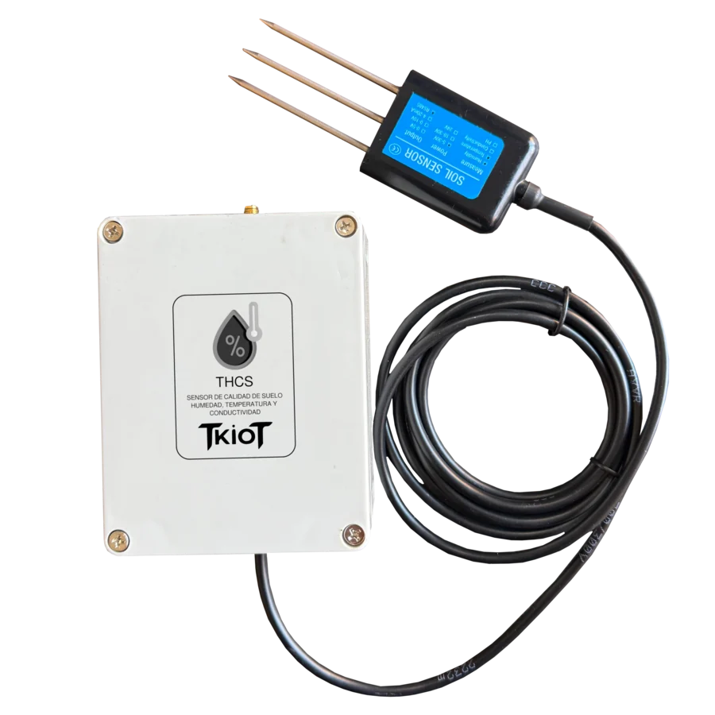

Soporte técnico y reparación de equipos electrónicos
Un equipo detenido no es un problema de electrónica. Es producción que no sale, riego que no parte y un proceso esperando. La prioridad es que vuelva a operar.

Cuando el repuesto está a dos meses de distancia
El equipo falla. Llamas al proveedor y te dicen que hay que mandarlo afuera, o que esa versión ya no tiene repuesto, o que conviene comprar uno nuevo.
Mientras tanto el proceso está detenido y cada día cuesta.
Buena parte de esas fallas se reparan a nivel de componente. No hay que reemplazar el equipo completo: hay que encontrar qué se quemó y cambiarlo. Eso es lo que hacemos, con equipos propios y de terceros.
Que el equipo vuelva a operar
Diagnóstico primero, presupuesto después. Sin cambiar partes a ciegas.
Diagnóstico
Identificamos la falla real antes de presupuestar, para no cambiar componentes a ciegas.
Reparación a nivel de componente
Reparamos la placa en vez de reemplazar el equipo completo cuando la falla lo permite.
Soporte remoto
Muchas fallas se resuelven sin mover el equipo: configuración, firmware o enlace de comunicación.
Repuestos
Mantenemos stock propio de componentes, lo que acorta el tiempo entre diagnosticar y reparar.
Mantenimiento preventivo
Revisión programada de equipos críticos, para encontrar la falla antes que la falla te encuentre a ti.
Equipos que reparamos
Equipos Tekroy
PostventaSoporte y reparación de todo lo que sale de nuestro taller.
Electrónica industrial
TercerosControladores, tarjetas y equipos de instrumentación de otros fabricantes.
Equipos descontinuados
ObsolescenciaElectrónica sin repuesto de fábrica, donde la reparación es la única vía razonable.
Instrumentación de laboratorio
LaboratorioEquipos de medición que necesitan volver a su condición de origen.
Lo que nos preguntan antes de partir
¿Reparan equipos que no compré a ustedes?
Sí. Trabajamos con electrónica industrial de otros fabricantes, incluida la que ya no tiene soporte de fábrica.
¿Cobran el diagnóstico?
El diagnóstico se presupuesta aparte de la reparación, justamente para no comprometer un arreglo antes de saber qué falló. Te decimos qué tiene y qué cuesta antes de intervenir.
¿Qué pasa si el equipo no tiene reparación?
Te lo decimos derechamente. En ese caso evaluamos si conviene un reemplazo o un desarrollo equivalente a medida.
¿Atienden en terreno?
Depende del equipo y del lugar. Muchas fallas se resuelven de forma remota; cuando no, coordinamos el retiro o la visita.
¿Tienen repuestos en stock?
Mantenemos stock propio de componentes en la Región Metropolitana y Valparaíso, lo que suele evitar la espera de una importación.
Otros servicios
Escríbenos
Cuéntanos qué equipo es y qué está haciendo mal. Te decimos si tiene reparación.